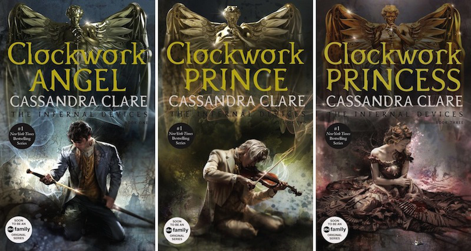
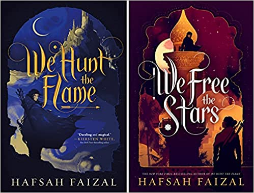
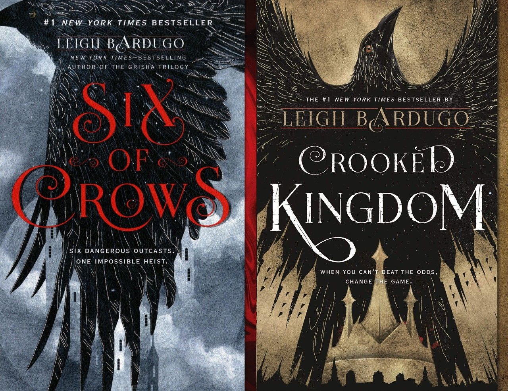
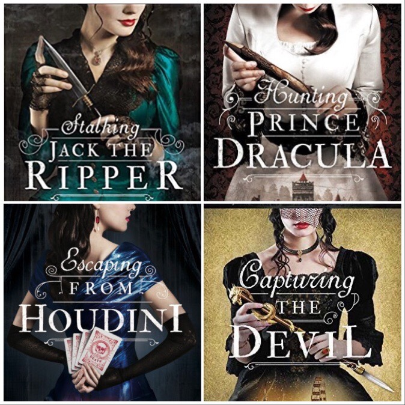
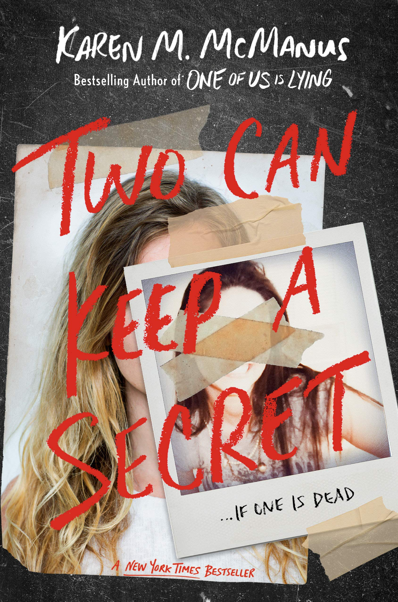
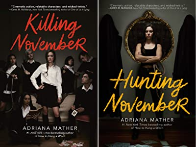
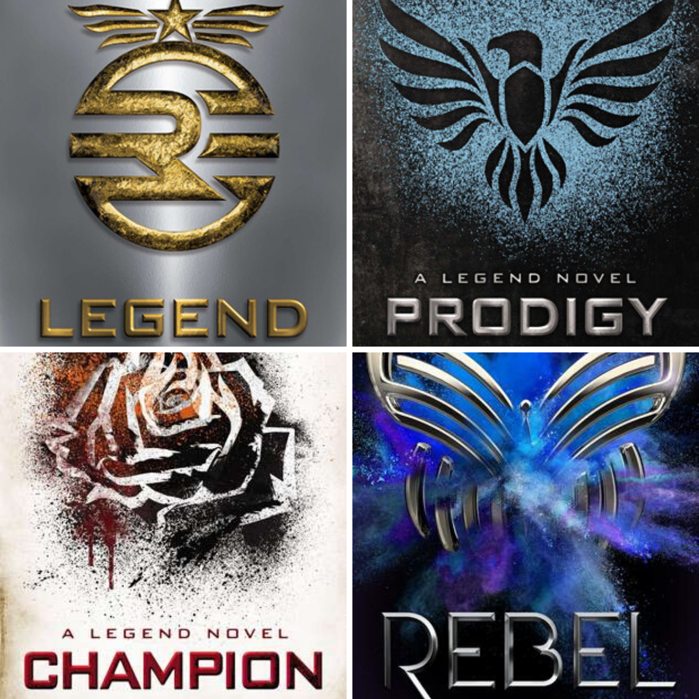
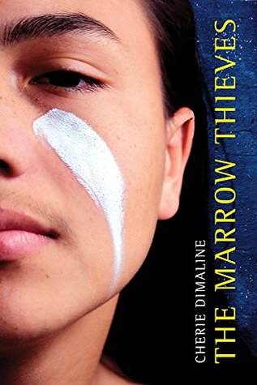

I find that books that leave you in some unhealthy emotional state, whether it be sadness or the feeling of not being able to get over a book, are always the best to read. If a book doesn't leave me in an emotional or physical chokehold when I'm finished with it, then I don't want it. The top 3 genres of fiction to me are fantasy, mystery and dystopian, so those are the ones I'll be recommending.
When picking up a fantasy book I find that there's a 50/50 chance that I'm either going to love the book or regret reading it. This is because most fantasy books are in a series due to the first book just being world building. Do you think I'd want to read that or even make you go through that? No, hopefully that was your answer from the start.
There aren't many standalone fantasy novels so finding this book was a blessing. I can't really deal with most fantasy books because of the extreamly long and intense world building that sometimes is the whole book so this one was really refreshing. This book is great as a quick read for fantasy lovers in a slump that want a book with a good plot, romance, found family trope, and a suberp main lead. (Read synopsis on Goodreads).

My absolute favourite sub-genre of any peice of literature is historical fiction so obviously this series is very high on my list. This series will have you in tears when your finished with it and even remember it will give you heart-burn. It really is a shame that The Mortal Instruments were created by the same author but I find that it was totally worth it to read the first half of that series to perfectly understand this one. (Read synopsis on Goodreads).

Based in magical ancient Arabia with a quest so impossible to succeed or even make out alive, We Hunt the Flame and We Free the Stars has all the tropes a fantasy reader loves, from found family to enemies to lovers. (Read synopsis on Goodreads).

These books are loved so much for a reason, the romance, plot, adventure and characters will stay in your mind for the rest of your life. You might cry every now and then while remembering this series but as I've stated before, I believe books that leave you feeling something afterwards are always the best. (Read synopsis on Goodreads).
By far my favourite genre of fiction, mystery, is always a delight to read. To me it’s because it makes you feel like you’re playing a guessing game and changing or adding onto your predictions with the clues gained as the story goes on.

If you're a historical fiction and mystery lover like me then you'd love this series. These books will leave you satisfied after each read with it's some-what predictable but greatly written plot twists that will have you coming back for more. (Read synopsis on Goodreads).

My favourite part about this book is the very unpredictable plot twist at the very end. Many people have said that One of Us is Lying by Karen M. McManus is better but I find that I like this one more. Thank You Ms.Cargil for recommending me this book in garde 6. (Read synopsis on Goodreads).

A spy boarding school that is full of children of crime lords? Sign me up! These books were the first things I read when quarantine started and I'm so happy that I had. (Read synopsis on Goodreads).
I don't read a lot of dystopian fiction; it's not that I dislike it; it's just that I'm not always in the mood to read one. These books, on the other hand, don't require me to be in a good mood to enjoy them.

By far my favourite dystopian series in the world, Legend is an amazingly written and loveable series. From the characters to the plot and world itself, this series has everything you could ask for in a dystopian. (Read synopsis on Goodreads).

Even if this book was something I had to read for class, this book is a great, short read that not only entertains but brings awareness to the mistreatment and oppresion of Indeginous people in Canada. (Read synopsis on Goodreads).
Return to the top of the page.